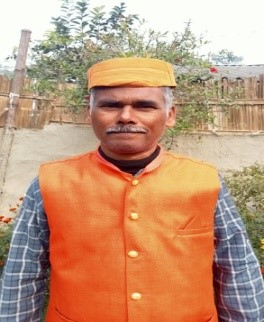
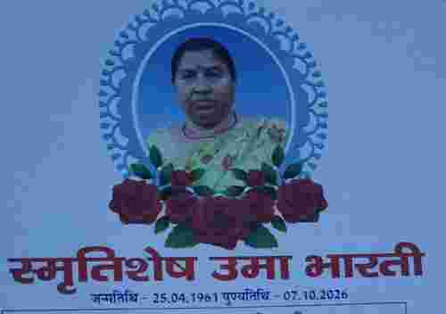

विदेह प्रथम मैथिली पाक्षिक ई पत्रिका

लालदेव कामत
एक कवि'क तकनीकी निवन्ध संग्रह/ प्रो० राम चन्द्र मण्डल जीकेँ पत्नी शोक मादे
१
एक कवि'क तकनीकी निवन्ध संग्रह
मैथिली आ हिन्दी भाषामे ३० गोट सँ अधिक काव्य पोथीक रचनाकार केँ एक
विशेष सज्जनके आग्रह पर गद्य विधामे कलम चललनि हेन। ओना ओ पूर्वमे गल्प
संग्रह (अष्टदल ) लिख चुकल रहथि। बहु चर्चित एहि 'सप्त - रश्मि '
पुस्तिकामे ६४ पृष्ठ , जकर मोल अढ़ाई सय टाका भारू. य । नवारम्भ सँ
२०२५ ई० मे प्रकाशित ऐ केँ आई एस बी एन ९७८९३४८४९५९७६ भेटल छै।
तथ्यपूर्ण ओ चर्चित मैथिलीक पोथीके आकर्षक कभर आ पछिला गत्ता पर लेखक
श्री राज किशोर मिश्र जीके परिचयके सँग रंगील छवि ओ रचना संसारक एक झलक
पाठककेँ प्रथम दृष्टया नजैर पड़त। पुस्तिकामे प्राक्कथन रूपेँ एहि मादे
स्वयं लिखलनि हेन। पाठ- १. शिर्षक - ऊर्जा म ओ एहि तरहेँ लेखन आरम्भ
करैत छथि -:
पूरा ब्रह्मांड ऊर्जेक रुप थिक। ब्रह्मांडक उत्पत्ति -कारण सेहो
ऊर्जेकेँ मानल गेलैक अछि। दुर्गा सप्तशतीमे वर्णित अछि जे आदिशक्ति सभ
प्राणीमे शक्ति - रुपमे स्थित छथि। ऋग्वेदमे भिन्न - भिन्न शक्तिक
प्रतिनिधित्व अलग-अलग देवलोकनि करैत छथि ।जेनाकि जल - शक्तिक अधिष्ठाता
वरूणदेव छथि,वायुक देवता मरुद्गण छथि, अग्नि शक्तिक प्रतिनिधि - देवता
अग्निदेव छथि प्रभृति, प्रभृति। श्री मिश्र जी सात गोट निवंध यथा-: १.
ऊर्जा, २. भारतमे संचार - क्रान्ति, ३. अंतरिक्ष - अनुसंधानमे भारतक
योगदान, ४. भारतमे डिजिटल (अंकीत) क्रांति, ५. खेती - बाड़ी आ किसान,६.
कम्प्यूटर ओ एआई , ७. पारिस्थितिकीय परिवर्तन। पाठके सारांश ऐ तरहेँ
जनतब य -:
पृथ्वीक दूनू ध्रुव पर जमल बरफ पिघलि रहल अछि, जाहिसँ समुंदरके जलस्तर
बढ़ि रहल छैक। प्रदुषण दुआरेँ तापमानमे जे वृध्दि भऽ रहल छैक ,ओहिसँ
ऋतुचक्र बदलि रहल अछि। तेँ वैज्ञानिक तकनीक ओ जन - जागरूकता सँ प्रदुषण
केँ यथाशीघ्र रोकल जाय। जाहि उपकरण सँ प्रदूषित गैस नि:सृत होईत अछि
,ओतय प्रदूषण- नियंत्रण - यंत्र जेनाकि प्रेसीपिटेटर ,फिल्टर आदिक आदिक
प्रयोग कयल जाए। यातायातक साधनमे विद्युत् चालित - वाहनक प्रचलन बढ़य।
पारंपरिक ऊर्जा स्रोतक साती नवीकरणीय ऊर्जा - स्रोतक बेसी सँ बेसी
उपयोग होईक। एहिसभ तरहेँ पर्यावरण स्वस्थ रहत आ हमहूँ सब। वर्ष २०१४ सँ
अक्षय ऊर्जा क्षमता लगधक तीन गुणा बढलैक हय। भारत तँ गैर- जीवाश्म ईंधन
स्रोत सँ ४०./. ऊर्जा प्राप्त करबाक सीओपी२१ केर लक्ष्य प्राप्त कयलक
हेन। सन् २०१४ ई०मे आरंभ कयल गेल नमामी गंगे कार्यक्रमके तहत ४९४८१
करोड़क ४९४ परियोजना केँ मंजूरि देला हेन ,ओहिमे सँ ३१५ टा पुर्ण कय
चुकल अछि। प्रधानमंत्री ई-बस योजनाक अन्तर्गत १४ राज्य आ ४ केन्द्र
शासित प्रदेश'क शहरके लेल ७२९३ इलेक्ट्रिक बसक गत साल मंजूरी भेल रहय।
बिहारमे नमामि गंगे परियोजनाक ५९०० करोड़ टाकाक लागत सँ आवास,शहरी
विकास लेल शुक्रवार २० जून २०२५ केँ श्री नरेन्द्र मोदी जीक कर कमल सँ
उदघाटनमे ८०० करोड़ सँ अधिकके राशि विभिन्न परियोजनामे मोतिहारी,
रक्सौल , बक्सर आ आरा एहन प्रमुख स्थानमे सीवेज उपचार योजना होयत। गंगा
नदी क ' सफाय पर कुल लागत २६०० करोड़ टाका सँ अधिक खर्च होयत। गंगाके
जल संसाधनके संरक्षण म ऐतिहासिक काज आरंभ भेल। पटना जिलाके मोकामा,
फतुहा , बेगूसराय , बख्तियारपुर,दीघा आ कंकरबागमे स्थापित होयबाला
एसटीपी प्रोजेक्टक क्षमता लाखो लिटर पानिके शुद्ध करबाक होयत। ऐ लेल
इंटरसेप्शन एंड डाइवर्जन काजक शुरुआतमे १८०० करोड़ टाका सँ पर्यावरणीय
स्थिरताकेँ वढ़ाबा लेल गेल छैक। नमामी गंगे कार्यक्रम - ऋषिकेश सँ
नौआबाखर उच्च माध्यमिक विद्यालयके शिक्षक सुभाष कामत घुमि आबि बतेलनि
जल शक्ति मंत्रालयके दिशसँ प्रौद्योगिकी आ बुनियादी ढ़ाँचा पर
सामुदायिक सहभागिता केँ महौत देल जा रहलैक य।
संचारक छोट सन गाछ आब विशाल वृक्ष भऽ गेल अछि। अपन बहुआयामी ओ विराट
उपयोगिताक कारणेँ ओ कल्प तरु सन भऽ जायत। मानलहुँ जे संचारमे बड़ गुण
छैक । मुदा मनुख जँ एकर दुरुपयोग करतैक , तँ एहि सँ क्षति सेहो भ' सकैत
छैक। साइबर क्राइम एकरे प्रतिफल थिक। एहिमे तकनीकक कोनो दोख नहिं छैक।
दोख तँ दुरूपयोग करयबालाक छैक। संचार एत्तहि आबिकऽ नहिं खत्म भ' जायत
अछि। संचारमे तँ ओ प्रतिभा छैक जे कहियो सुनबै पृथ्वीकेँ आकाशगंगा अथवा
आन गैलेक्सी सँ सूचना - सम्पर्क भऽ गेलैक अछि। ५जी-६जी तँ अबिते रहतैक।
भारत पहिल उपग्रह 'आर्यभट्ठ ' बनौलक जकर प्रक्षेपण सोवियत संघ द्वारा
१९७५ ई०मे कयल गेलैक । १९८० ई०मे रोहणी भारतके पहिल सैटेलाईट छल जकरा
पृथ्वीक कक्षामे अपने देशमे बनल प्रक्षेपण - यान एस एल वी -३ द्वारा
स्थापित कयल गेलैक। १९८३ ई०मे भारतीय राष्ट्रीय उपग्रह प्रणालीक
(INST-B) सफल प्रक्षेपण रहल। उपग्रह प्रक्षेपणक ई क्रम चलैत रहलै। भारत
अंतरिक्ष - अनुसंधानमे आगाँ - आगाँ डेग बढबैत रहल। इनसैट - बीक मुख्य
उदेस छलैक दूरसंचार एवं टेलीविजन प्रसारण सेवामे तकनीकी योगदान। आई आर
एस. प्रोग्रामक मिशन प्राकृतिक संसाधन ओ पर्यावरण - प्रबंधन सँ जुड़ल
छलैक।
आधार कार्ड शुरुमे तँ परिचय - पत्र जेना छलै। मुदा वादमे ओ ऑनलाईन आ
ऑफलाइनक बीच सेतुक काज करय लागल। जाहि देशमे अधिकतर नागरिकक बैंकमे
कोनो अबरजात नहिं छलैक ,ततय प्रधानमंत्री जन- धन योजनान्तर्गत अधिकांश
लोकक खाता बैंकमे खुजि गेलैक। २०१४ ई०मे जन - धन योजना शुरू भेलै आ आठ
बरखमे छियालीस करोड़ बैंक एकाउंट खुजि गेलैक। २००९- १४ केँ बीचमे लगभग
सत्तरि करोड़ आधार कार्ड बनल रहैक ,जे २०२२ ई० धरि एक अरब तीस करोड़ पर
पहुँच गेलैक।
भारतमे हरित क्रांतिक जनक डॉ० एम एस स्वामीनाथनकेँ मानल जाइत छन्हि। ओ
धान आ गहुमक ओहन प्रजाति तैयार कयलन्हि जाहिमे कीड़ा नहिं लगैक आ उपज
बेसी होइ। १९७० ई० धरि गहुंंमक उबजा बीस मिलियन टनधरि पहुंच गेल आ
तहिना धानक उपजमे सेहो वृद्धि भेलै। हरित क्रांतिक आरम्भहिसँ भारत अन्न
उपजमे आत्मनिर्भर होअय लागल। छोट डांटबला गहुंमक प्रजातिमे सोनोरा -६४
,सोनालिका आ कल्याण सोना छल। ओडिशा आई आर- ८ सेहो छोट डांटबला धानक
प्रभेद अछि,जकर उबज - क्षमता बहुत बेसी छै।
एआईमे अपना कोनो संवेदना नहिं होइत छैक । मुदा ओ मनुक्खक संवेदना -
पध्दतिकेँ चिन्हि सकैत अछि। कम्प्यूटर नेटवर्क एकटा नव नोकरशाही अछि जे
मनुक्खक नोकरशाही सँ बेसी शक्तिशाली अछि। उदाहरण स्वरुप, औद्योगीक
क्रांतिक वाद जखन नव - नव तकनीक सब दुनिया भरिमे पसरऽ लगलै ,तं ओ
परम्परागत आर्थिक, राजनीतिक ओ सामाजिक संरचनाकेँ बदलैत एकटा नव समाजक
रचना अएलक जे पूर्वसँ बेसी सुखी छल। मुदा एकर अन्हार पक्ष सेहो छलैक।
अल्ट्राबायलेट किरिनकेँ पृथ्वीपर सोझे अएलासँ वैश्विक तापन बढ़ि रहल
अछि। जलीय वनस्पति सभकेँ बड़ भारी नोकसान भऽ रहल छैक, माटिमे उपस्थित
सूक्ष्म जीव जे गाछ - बिरिछकेँ पोषक तत्त्व देब'मे सहायक होइत छैक, ओहो
सब एहि विकिरणसँ नष्ट भ ' रहल अछि। जाहि पदार्थ सभसँ ओजोन परतमे क्षरण
भ' रहल छैक, ओहि सभक प्रयोग पर नियंत्रण आवश्यक अछि। पृथ्वीक ई
प्रकृतिक कवच जँ एहिना टुटैत रहतै ,तँ एहि ग्रहपर रहनिहारक अस्तित्व पर
खतरा बढ़ैत जेतैक। निबन्ध हिनक ठोसगर छन्हि। पोथी चर्चा सँग एक
संस्कृतक पाँति -:
ऊँ अंतरिक्ष: शांति:, वनस्पतय: शांति:
२
प्रो० राम चन्द्र मण्डल जीकेँ पत्नी शोक मादे

स्मृति शेष उमा भारती जी बी एन एम यू. - मधेपुरा सँ दू विषयमे एम ए. (मनोविज्ञान आ गृहविज्ञान)पास रहथिन। सुपौल (बिहार) केर स्व० जागेश्वर कामत जीक' पुत्री उमा भारती 'क जन्म २५ अप्रील १९५९ ई० केँ वार्ड नं० ३ मे कृषिवर्त केबट परिवारमे भेल रहनि। हुनक आरम्भिक शिक्षा बबुजन बालिका विद्यालय - सुपौल आ वादक शिक्षा केशव कन्या विद्यालय मधेपुरा सँ मैट्रिक धरि भेल रहनि। पार्वती विज्ञान महाविद्यालय - मधेपुरा सँ , आ टी पी कालेज सँ पीजी. ओ कयने रहथिन। जीविकोपार्जन लेल प्रा०वि० राजपुरमे दि० ३- १- १९८७ केँ नोकड़ी धेलीह। तदन्तर स्थानांतरित भऽ प्रा०वि०- मधेपुरा आबि गेलीह। दि०. ३०- ४ -२०२३ ई० केँ सेवा निवृत्ति पौवलीह। सुश्री उमा जीके वियाह एम०ए० क' रहल छात्र पिपरा निबासी श्री राम चन्द्र मण्डल जीसँ दि० २५- ६- १९७५ मेँ भेल रहनि। हुनके सदकृपा सँ प्रवेशिका लगायत उच्चतम शिक्षा प्राप्त कयने छलीह। श्रीमती उमा भारती जीक दू पुत्र क्रमशः डॉ० आलोक कुमार - प्रधानाचार्य, वेदव्यास कालेज अमलेश्वर नगर ,मधेपुरामे आ अमित कुमार एम टेक सम्प्रति शिक्षक - योगेन्द्र+२ उच्च विद्यालय मुरहो मे सेवारत छन्हि। एक पुत्र - आनन्द वर्धन ३४ वरखक उमेरमे ८ साल पूर्व रुग्णताक इलाज कराबैत दिल्ली स्थित मेदांता अस्पतालमे आखरि शांस लेलकनि। ताही दुखद चिन्तामे व्यथित रहैत अपनों स्फूर्ति कमय लगलन्हि।
ओ शालीन आ मृदुल व्यक्तित्वक' लौह स्त्री छलीह, अपन शील सोभावक कारणेँ शिक्षक समुदायमे विशेष लोकप्रियता हासिल कयने रहथिन। मध्यान्ह भोजन आ विद्यालयी प्रबन्धन एतेक राश दक्षता छलन्हि जे आनो सब अध्यापिका हुनका सँ विमर्श करथि! अपन ईमानदारी ,निष्ठा ओ खुजल दिलक होयबाक कारणेँ सबहक हृदय पर राज करैत अपन गहिंर प्रभाव छोड़लनि। शिक्षा विभागक' अधिकारीगण हुनक प्रशासनिक क्षमता , निर्भिकता आ हाजीर जबावी देखि मुक्तकण्ठ सँ प्रशंसा करन्हि। इयह एकटा संयोग रहैक जे ओ शिक्षक संघक चुनावमे जिला प्रतिनिधि उम्मीदवारक बीच सँ सर्वाधिक मत पाबि स्थापित नायिका बनि गेल छलीह। सन् १९८६ ई० सँ पूर्व कठिनता पूर्वक गुजर - बसर करैत डॉ० किष्टोके एक कक्ष खपरैल घरमे सबैतुड़ रहैत मधेपुरामे शिक्षाक अलख जगेबामे विदुषी उमा भारती जी अपन एक पृथक पहिचान बनेलीह। अपन पति यूनिवर्सिटी प्रोफेसर आर सी मंडल जीक सन् १९९० ई० मे त्रिवेणीगंज विधानसभा चुनावक सफल संचालन आ १९९६ ई० म मधेपुरा क्षेत्रसँ लोकसभा निर्वाचनमे पतिदेव महोदय केँ क्षेत्र परिभ्रमणमे संगसाथ एक चतुर नेत्री केर तरह भूमिका निभेने छलीह। राजनीतिक - सामाजिक जागरण आ महर्षि वेदव्यास कालेज फोलि शैक्षणिक जागरूकता लेल हुनका स्मरण कयल जाइत रहत। ऐ पाँतिक लेखककेँ एहिबेर सुपौलमे व्यास शिखर सम्मान भेटैक अवसर पर समारोहक शोभा बढ़बैत ओ उदास मुखाकृतिक आभामे संक्षिप्त भेंटवार्ता कयने रहनि। विनम्र श्रद्धांजलिक संग हुनक हुतात्माके शांति लेल ईष्ट सँ सतत् प्रार्थना अछि।
वेदव्यास कालेजक निगरानी ओ नितदिन जगजीवन आश्रम सँ डियुटि कऽ अबैत घरी करैत रहलीह। वेदव्यास कालेजक लेल दू बिगहा जमीन बेसाहि महामहिम राज्यपाल नामे निवंधन ओ स्थापनाकाल सँ हुनक आत्मसात् आचरण हरदम समर्पित रहलनि। जखन आँखिक उपचार लेल बंगलौरके यात्रा पर श्री मंडलजी रहलथि तँ पुत्रवधू फौन सँ सूचित करैत छन्हि ३ वजे सकाले ७ अक्टूबर २०२६ केँ हृदयगति रुकला सँ महाप्रयाण लेल अनन्त यात्रा पर श्रीमती भारती जी चलि बैसलीह। भावभीनी श्रद्धांजलि! ऊँ शान्ति!!
अपन मंतव्य editorial.staff.videha@zohomail.in पर पठाउ।
विदेहमे सभठाम ताकू / Search all Videha
Static full-text search · Pagefindलेखक/शीर्षक/अंक/वर्ष — खोज-विधा। गद्य/पद्य/शोध current/static + पुरान Videha/Sadeha contents खोजैत अछि। पोथी pothi.htm केर पूर्ण listing, श्रव्य-दृश्य Audio_Video.htm केर पूर्ण listing, पञ्जी videha-sadeha/panji-shards GitHub data, आ थेसारस/शब्दकोश videha-ejournal.github.io/data GitHub JSON corpus केँ query करैत अछि आ दूनू Quiz corpus मे dictionary/vocabulary/शब्दार्थ-सम्बन्धी प्रश्नोत्तरी परिणाम सेहो जोड़ैत अछि। Quiz videha-quiz आ GitHub user-site दूनू bilingual quiz corpus खोजैत अछि। Roman/IAST + देवनागरी cross-script search समर्थित। Issue/Year लेल संख्या दिअ। PDF-अभिलेख archive.org/VidehaAndSadeha सूची खोजैत अछि।